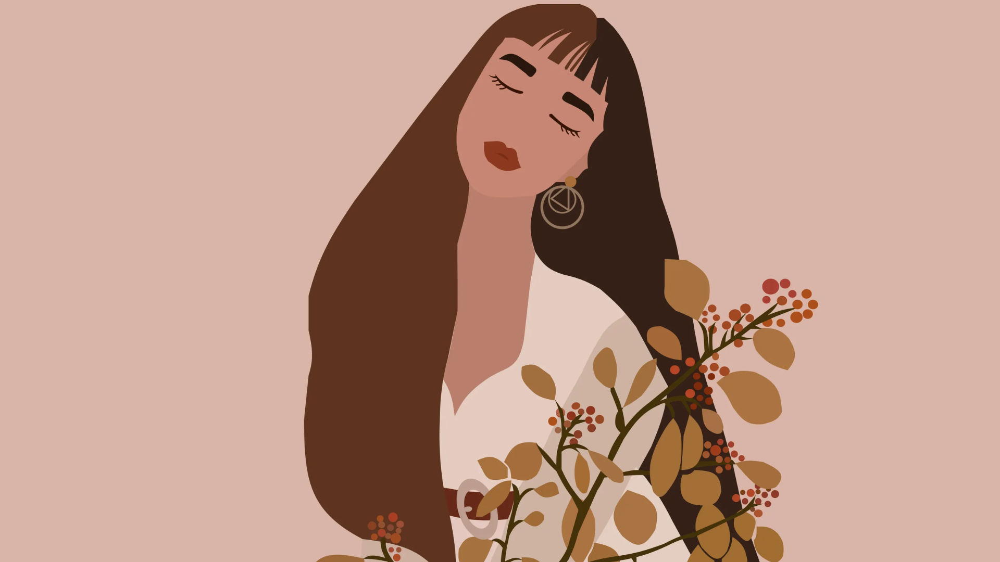

Effortless OOTD Inspiration: Slay Your Day in Style
Hey beautiful! 🌸
We all have those mornings where our closet feels like a maze, and picking an outfit seems harder than solving a puzzle. That’s where your daily OOTD moment comes in. So take that as a chance to express yourself, boost confidence, and have fun with fashion!
1. Start With a Statement Piece
Every great outfit begins with one item that pops. Maybe it’s your mommy's old piece of cloth, a bold blazer or a patterned skirt.
2. Mix and Match Textures
Combine soft and structured pieces for depth. Think cozy knit with sleek leather, or airy chiffon with structured denim.
3. Accessorize Smartly
Accessories are your secret weapon. Layer delicate necklaces, stack rings, or throw on a scarf.
4. Play With Colors
Don’t shy away from color! Adding a pop of vibrant color like fuchsia, mustard, or turquoise can instantly refresh your outfit.
5. Confidence is Your Best Fit
No matter what you wear, your confidence makes the outfit shine. Stand tall, smile, and rock your look.